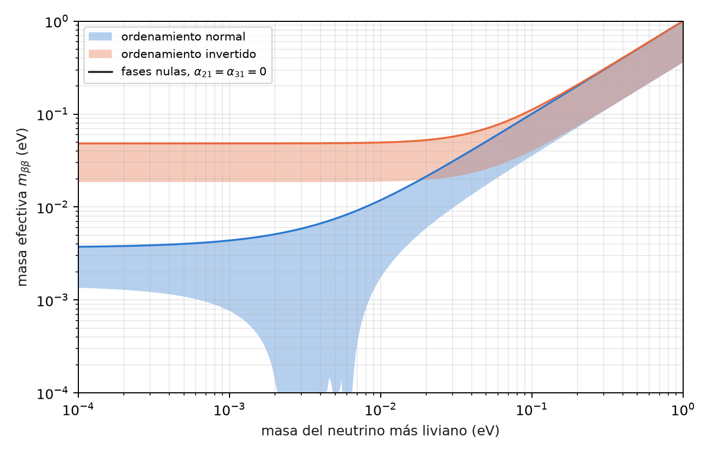
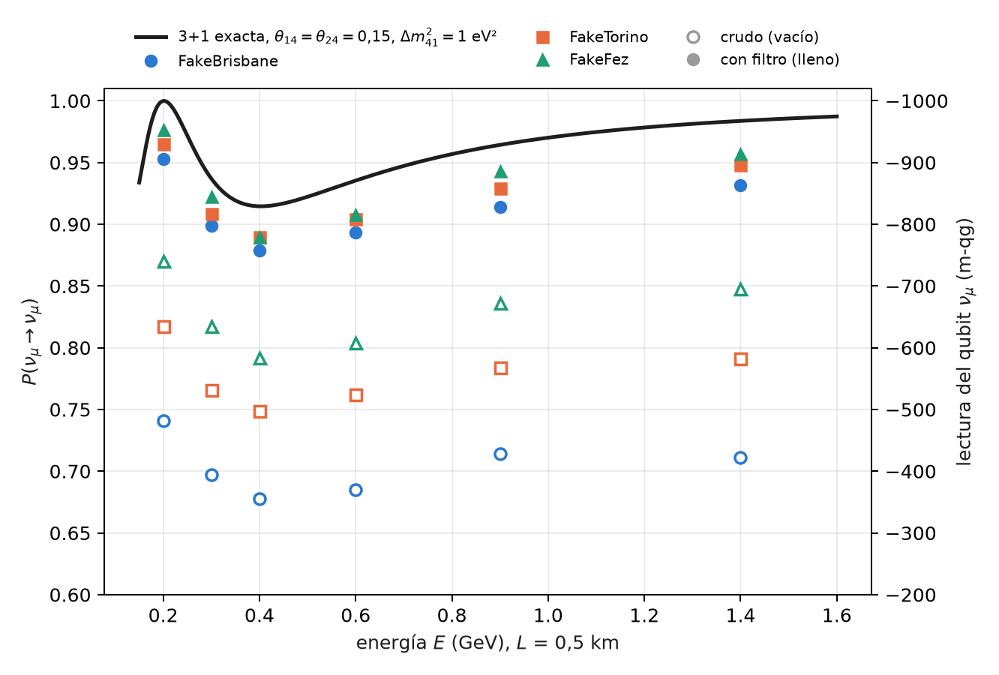
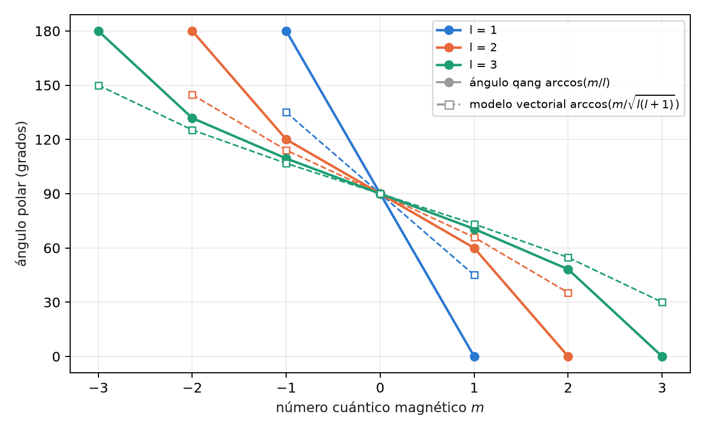

11 Fases de Majorana, doble beta sin neutrinos y neutrinos estériles
Los capítulos 9 y 10 leyeron lo que un circuito de oscilación ve: ángulos de mezcla, la fase CP, el ordenamiento de masas a través de la materia. Este capítulo trata dos preguntas abiertas de la física de neutrinos que tienen una respuesta clara en términos qg, una negativa y otra positiva. Las fases de Majorana no cambian ninguna probabilidad de oscilación, y por lo tanto ninguna lectura qang: el compilador las borra. Un neutrino estéril, en cambio, es un qubit más en el sector de peso 1, y el filtro lo trata como a cualquier otro sabor. Al final, como cierre de la Parte III, los cuatro números cuánticos del átomo escritos con la misma regla.
11.1 Desde la base: lo que no cambia una probabilidad no cambia una lectura
Todas las lecturas del capítulo 1 son funciones de probabilidades: \(qg_Z=2p_0-1\), \(m=1000\,qg_Z\), el ángulo \(\arccos qg_Z\) y la entropía \(qg_S\). Por eso un parámetro físico que no cambia ninguna probabilidad de medición es invisible para todas ellas a la vez, sin excepción y con cualquier número de disparos. La pregunta “¿lo ve un circuito?” se reduce a “¿cambia alguna probabilidad?”, y se responde antes de correr nada.
Al revés, un parámetro que sí cambia una probabilidad en \(\delta P\) aparece como \(2000\,\delta P\) m-qg en el qubit del sabor correspondiente, como en los capítulos 9 y 10. El neutrino estéril de este capítulo es de ese tipo: con los parámetros hipotéticos que se usan abajo, baja la supervivencia de \(\nu_\mu\) en 0,085, es decir, 171 m-qg.
11.2 Las fases de Majorana son invisibles para las oscilaciones
Si el neutrino es su propia antipartícula (una partícula de Majorana), la matriz de mezcla tiene dos fases más,
\[ U_M=U\,\operatorname{diag}\!\left(1,\ e^{i\alpha_{21}/2},\ e^{i\alpha_{31}/2}\right). \]
La matriz agregada es diagonal en la base de masa, y la propagación también lo es. Las dos conmutan, y en el operador de evolución \(U_M\,D\,U_M^\dagger\) la fase se cancela con su inversa: \(U_M D U_M^\dagger=U D U^\dagger\). Ninguna probabilidad de oscilación depende de \(\alpha_{21}\) ni de \(\alpha_{31}\), ni en el vacío ni en la materia (en la materia el hamiltoniano es \(U_M\,\mathrm{diag}(0,\Delta m^2_{21},\Delta m^2_{31})\,U_M^\dagger+V\), y la cancelación ya ocurre en el primer término, antes de sumar el potencial). Numéricamente la diferencia máxima entre las nueve probabilidades con y sin fases es \(4\times10^{-16}\), el redondeo de la máquina (§163).
En el circuito de tres sabores del capítulo 9 las fases son compuertas de fase en la base de masa, insertadas a cada lado de la propagación (majorana_circuit). Lo instructivo es lo que hace el transpilador: en los tres dispositivos simulados, el circuito compilado con fases \((\alpha_{21},\alpha_{31})=(\pi/2,\,3\pi/4)\) es idéntico al compilado sin ellas (en FakeFez, 18 CZ, 48 \(R_Z\) y 47 \(\sqrt X\) en los dos). El optimizador junta cada compuerta de fase con su inversa y las elimina. No es una “eliminación analítica” pensada por nadie, sino la consecuencia directa de que el operador no cambia: un compilador que simplifica fases consecutivas encuentra la identidad sola.
11.3 Las fases de Majorana en la doble beta sin neutrinos
Donde las fases sí se ven es en un proceso que viola el número leptónico: la desintegración doble beta sin neutrinos, \((A,Z)\to(A,Z+2)+2e^-\), posible sólo si el neutrino es de Majorana. Su tasa es proporcional al cuadrado de la masa efectiva
\[ m_{\beta\beta}=\left|\sum_i U_{ei}^2\,m_i\right| , \]
y como entra \(U_{ei}^2\) y no \(|U_{ei}|^2\), las fases no se cancelan: pueden sumar las tres contribuciones o hacerlas interferir destructivamente. Con el neutrino más liviano sin masa, recorrer las dos fases da (§163)
| ordenamiento | masas (meV) | \(m_{\beta\beta}\) (meV) |
|---|---|---|
| normal | 0; 8,6; 50,1 | 1,4 a 3,7 |
| invertido | 49,2; 49,9; 0 | 18,7 a 48,3 |
La Figura 11.1 muestra las dos bandas en función de la masa más liviana. En ordenamiento invertido la banda tiene un piso de unos 19 meV, que es el objetivo de la próxima generación de experimentos. En ordenamiento normal, entre unos 2 y 7 meV de masa más liviana, las fases pueden anular \(m_{\beta\beta}\) por completo: una cancelación que ningún experimento de doble beta podría distinguir de un neutrino de Dirac.

La lectura qg de esta sección es sólo la de la sección anterior, dicha al revés: un circuito de oscilación no puede medir lo que esta figura grafica. Lo que sí hace la escala es separar con claridad las dos preguntas, la de oscilación (probabilidades, lecturas qang) y la de masa (una amplitud con fases, fuera de cualquier lectura de un qubit de sabor).
11.4 El neutrino estéril: un cuarto qubit en el sector de peso 1
Un neutrino estéril \(\nu_s\) es un cuarto sabor que no interactúa por la fuerza débil, pero que se mezcla con los otros tres. En el modelo 3+1 hay un cuarto estado de masa con \(\Delta m^2_{41}\sim1\) eV², mucho mayor que los otros dos, y la mezcla real es una secuencia de seis rotaciones,
\[ U=R_{34}\,R_{24}\,R_{14}\,R_{23}\,R_{13}\,R_{12} \]
(sin fases CP, para mantenerlo simple). En el circuito, cada sabor es un qubit con un solo 1: el estéril es simplemente un qubit más en el sector de peso 1 (sterile_circuit). Cada rotación es una RBS y la propagación, una compuerta de fase por qubit; todo conserva el peso y el filtro se aplica sin cambios.
A distancias cortas, donde las oscilaciones de los tres sabores todavía no empezaron, la supervivencia es efectivamente de dos niveles,
\[ P(\nu_\mu\to\nu_\mu)\approx1-4|U_{\mu4}|^2\left(1-|U_{\mu4}|^2\right)\sin^2\frac{\Delta_{41}}{2} . \]
Con los valores hipotéticos \(\theta_{14}=\theta_{24}=0{,}15\) y \(\Delta m^2_{41}=1\) eV², \(|U_{\mu4}|^2=0{,}022\) y la amplitud es 0,085; a \(L=0{,}5\) km el primer mínimo cae en 0,40 GeV (Figura 11.2). Es el mismo caso del capítulo 9, con la misma geometría: un cono de precesión con ángulo de mezcla efectivo, ahora entre \(\nu_\mu\) y \(\nu_s\).
En los modelos de ruido simulados, las tres predicciones registradas para el estéril se cumplieron:
| prueba | resultado |
|---|---|
| S1 error filtrado menor que el crudo en las 18 combinaciones (energía, dispositivo) | sí |
| S2 mediana de la razón crudo / filtrado \(\ge 2\) | 5,5 |
| S3 mínimo filtrado de \(P(\nu_\mu\to\nu_\mu)\) en 0,4 GeV en los tres dispositivos | sí |
En el mínimo (exacta 0,915), FakeBrisbane lee 0,678 crudo y 0,879 filtrado; FakeTorino, 0,749 y 0,890; FakeFez, 0,792 y 0,890. La ganancia es mayor que con tres sabores (5,5× contra 3,0–3,8×) porque el circuito tiene cuatro qubits: hay más formas de que un disparo salga del sector de peso 1, y el filtro las descarta todas.

Lo que queda está, otra vez, dentro del sector: los valores filtrados siguen 0,025 a 0,036 por debajo del exacto en el mínimo, porque el ruido que mueve un 1 de un qubit a otro conserva el peso y el filtro no lo ve.
Pendiente: los datos. Los ángulos de mezcla de esta sección son hipotéticos, elegidos para que la señal se vea; no son un ajuste. Los límites fenomenológicos y la comparación de modelos 3+1 con los experimentos de línea de base corta no están hechos: quedan como propuesta.
11.5 Los cuatro números cuánticos en términos qg
El capítulo 10 terminó con una pregunta sobre qué número se conserva. La misma pregunta, aplicada al átomo, da una lectura qg de los cuatro números cuánticos (§155). Es una traducción, no física nueva.
- El número magnético. Un registro de \(n\) qubits en su subespacio simétrico es un espín \(j=n/2\), y en cada disparo el número magnético se lee del peso de Hamming: \(m=n/2-w\). El filtro de peso es la proyección sobre un valor de \(m\), y \(qg_Z=\langle J_z\rangle/j\) para cualquier momento angular.
- \(m_s\) es un qubit, con \(qg_Z=2m_s\). \(m_l\) de un orbital \(l\) es el peso de un registro simétrico de \(2l\) qubits: los tres orbitales \(p\) complejos son \(|00\rangle\), \((|01\rangle+|10\rangle)/\sqrt2\) y \(|11\rangle\). Los reales \(p_x\) y \(p_y\) mezclan \(m_l=\pm1\), y por eso tienen \(qg_Z=0\) como \(p_z\), pero con entropía 0,63 en lugar de cero.
- \(l\) es la simetría de permutación, y se lee con valores qg de SWAP: para dos qubits, \(\langle J^2\rangle=1+qg_{\text{SWAP}}\).
- \(n\): por la simetría oculta SO(4) del hidrógeno, la capa \(n\) son dos espines \((n-1)/2\), es decir, dos registros simétricos de \(n-1\) qubits; \(m_l\) es \((n-1)\) menos el peso total de los \(2(n-1)\) qubits, y el filtro de peso lo fija.
El ángulo qang de un autoestado \(|l,m\rangle\) es \(\arccos(m/l)\). El ángulo del modelo vectorial de los libros de texto es \(\arccos\!\big(m/\sqrt{l(l+1)}\big)\), y siempre queda más cerca del ecuador (Figura 11.3), porque \(|l,m\rangle\) tiene una dispersión transversal \(\langle J_x^2+J_y^2\rangle=l(l+1)-m^2>0\):
| \(l\), \(m\) | ángulo qang | modelo vectorial | \(\langle J_x^2+J_y^2\rangle\) |
|---|---|---|---|
| 1, +1 | 0° | 45,0° | 1 |
| 2, +2 | 0° | 35,3° | 2 |
| 2, +1 | 60,0° | 65,9° | 5 |
| 3, +3 | 0° | 30,0° | 3 |
| 3, +1 | 70,5° | 73,2° | 11 |

\(qg_Z\) mide hacia dónde apunta \(\langle\mathbf J\rangle\); el modelo vectorial dibuja un vector de largo \(\sqrt{l(l+1)}\). Los dos coinciden sólo en \(m=0\). En una demostración (no registrada) con el modelo de ruido de FakeTorino, \(p_z\) (\(m_l=0\)) se filtra a \(m_l=\pm1\) en el 19% de los disparos con la disposición de qubits por defecto y en el 2,2% con la cadena que elige ibm.best_chain; en los dos casos el filtro de peso devuelve \(P(m_l=0)=1\).
11.6 Sin qang y con qang
| acción | sin qang | con qang | diferencia |
|---|---|---|---|
| decidir si un parámetro es observable | buscar si alguna probabilidad depende de él | “lo que no cambia una probabilidad no cambia ninguna lectura” | equivalente; la regla qang lo dice para todas las lecturas a la vez |
| calcular \(m_{\beta\beta}\) | \(\lvert\sum U_{ei}^2m_i\rvert\) | — | qang no se aplica: es una amplitud con fases, no una probabilidad |
| cuantificar la señal del estéril | \(\delta P=0{,}085\) | 171 m-qg | unidad |
| reducir el error con cuatro sabores | lectura cruda | filtro de peso: 5,5× | del filtro |
| comparar ángulo qang y modelo vectorial | \(\arccos(m/\sqrt{l(l+1)})\) | \(\arccos(m/l)\) | a favor de qang como lectura: es la dirección de \(\langle\mathbf J\rangle\), lo que mide un \(qg_Z\); el modelo vectorial dibuja otra cosa |
Balance. El capítulo tiene un caso donde qang no tiene nada que decir (\(m_{\beta\beta}\)), y conviene que esté escrito. Su aporte propio es de interpretación: qué ve una lectura y qué no, y qué ángulo mide realmente un \(qg_Z\).
11.7 En código
import math
from qang import neutrino as nu
from qang import angular
# Majorana: ninguna probabilidad cambia, en vacío o en materia
nu.majorana_invisible(1300, 2.6, -math.pi / 2, math.pi / 2, 3 * math.pi / 4, rho=2.85) # 4e-16
nu.m_bb(0.0, a21=0.0, a31=0.0, ordering="IO") # 0.048 eV
# el estéril: un cuarto qubit en el sector de peso 1
P = nu.sterile_probabilities(L=0.5, E=0.4, dm41=1.0, theta14=0.15, theta24=0.15) # P[mu, mu] = 0.915
qc = nu.sterile_circuit("mu", L=0.5, E=0.4, dm41=1.0, theta14=0.15, theta24=0.15)
# los números cuánticos: el ángulo qang y el del modelo vectorial
math.degrees(angular.qang_angle_of_eigenstate(2, 1)), math.degrees(angular.vector_model_angle(2, 1)) # 60.0, 65.911.8 Resumen
- Toda lectura qang es función de probabilidades: un parámetro que no cambia ninguna probabilidad es invisible para todas a la vez.
- Las fases de Majorana se cancelan en \(U_MDU_M^\dagger\) (diferencia \(4\times10^{-16}\)); el transpilador entrega el mismo circuito con y sin ellas.
- La doble beta sin neutrinos sí las ve: \(m_{\beta\beta}\) va de 1,4 a 3,7 meV (normal) y de 18,7 a 48,3 meV (invertido) con el neutrino más liviano sin masa, y puede anularse en ordenamiento normal.
- Un neutrino estéril es un cuarto qubit en el sector de peso 1; con mezcla hipotética, el filtro gana 5,5× y ubica el mínimo en 0,4 GeV. Los límites con datos reales quedan pendientes.
- Los cuatro números cuánticos se leen en qg: \(m\) del peso de Hamming, \(l\) de SWAP, \(n\) del tamaño del registro; el ángulo qang \(\arccos(m/l)\) no es el del modelo vectorial.
Notas bibliográficas
El neutrino de Majorana es Majorana (1937); las fases de Majorana y su invisibilidad en las oscilaciones, Schechter y Valle (1980) y Bilenky et al. (1980). Para la doble beta sin neutrinos, véase Dolinski et al. (2019); la señal que motivó el neutrino estéril es Aguilar et al. (2001). Las notas de investigación numeradas (§) que cita el capítulo y los scripts que lo verifican están en el repositorio (Monteverde 2026a); la definición de la unidad qang, en Monteverde (2026b).